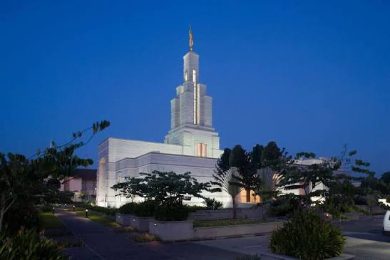
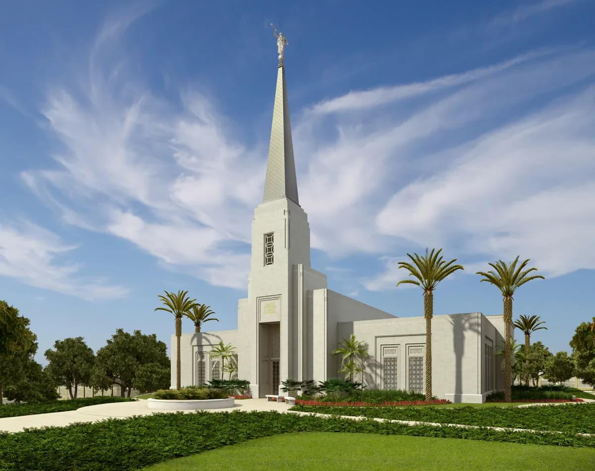
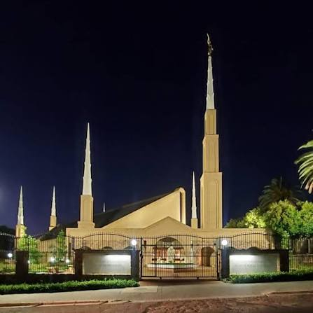
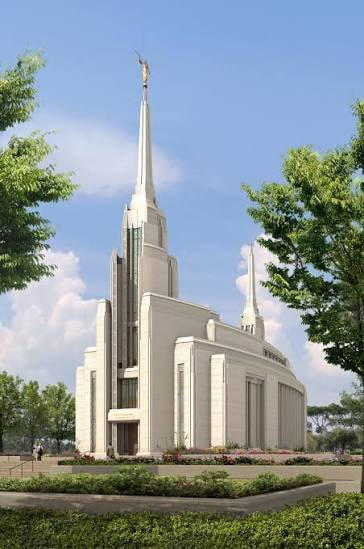
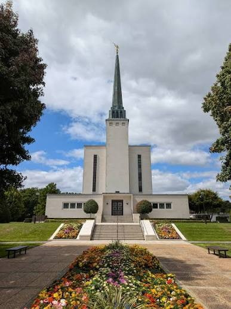
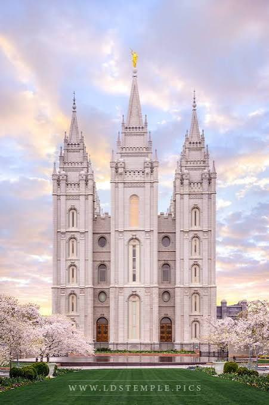

Temple Album
☰
Home
Old
New
Large
Small
Temple Album

Accra Ghana Temple

Abidjan Ivory Coast Temple

Johannesburg South Africa Temple
Aba Nigeria Temple

Rome Italy Temple

London England Temple
Washington D.C. Temple

Salt Lake Temple
Manila Philippines Temple